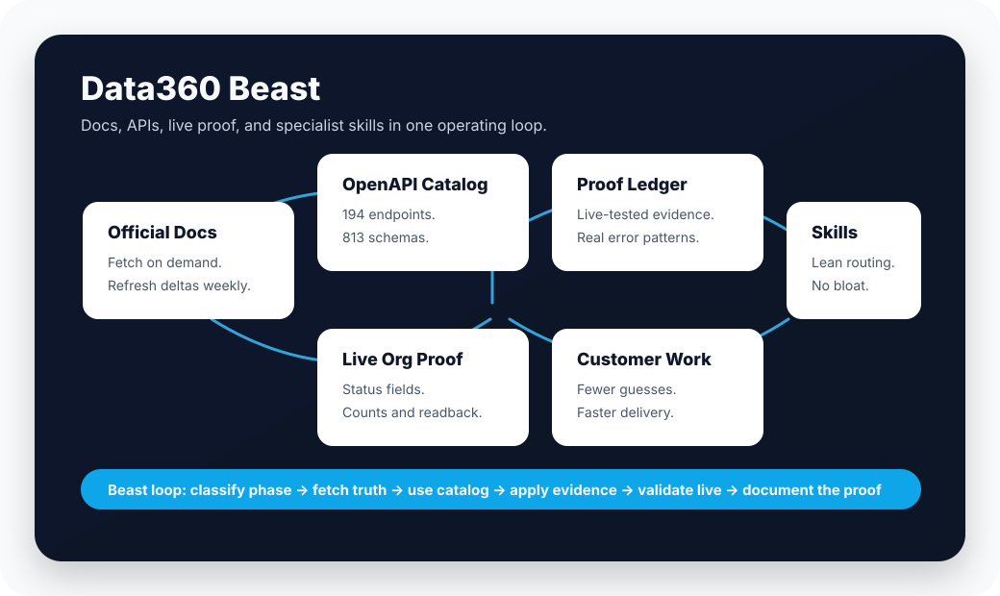

Skill pack
skills/ ships the Beast router plus 16 specialist Data 360 skills.
Salesforce Data 360, made agent-ready
Data360 Beast packages the preflight contract, phase proof matrix, model-gallery lessons, RAG retrieval playbook, proof ledger evidence, and validation loop an AI agent needs to work with Salesforce Data 360 without guessing.
npx skills add architect-bertie/data360beast
Use Data360 Beast when:
- running target-org/data-space preflight
- designing a Data 360 architecture
- choosing the required proof path
- finding the right Connect API endpoint
- designing RAG, search indexes, and retrievers
- creating query, segment, activation, or data action payloads
- validating with org metadata, status, counts, and readbackAgent-ready by design
Inspired by the Agentforce Vibes Library pattern: simple repository shape, explicit skill folder, and compact machine-readable entry points.
skills/ ships the Beast router plus 16 specialist Data 360 skills.
/llms.txt points models to the right files before they crawl the repo randomly.
/agent-manifest.json exposes topics, scores, entry points, and validation status.
phase-proof-matrix.json maps phases to sources, tools, proofs, and assumptions to avoid.
Full specialist layer
The pack now includes the orchestration skill, Connect API skill, and specialist phase skills for the full Data 360 delivery lifecycle.
The system
Data 360 work fails when teams mix stale docs, guessed payloads, and unverified org state. Beast mode makes the source order explicit.

Proof ledger
We tested core Data 360 Connect API surfaces in a live Data 360 lab org and documented the evidence, caveats, and promotion status that docs and OpenAPI alone do not reveal.
includeDbt.models.models[] is the working DBT segment create shape.includeDbt.models[].Scorecard
The site is public; the raw Salesforce Help cache is not. That keeps the repo clean, legal, and useful for teammates, customers, and agents.
Repository map
data360beast/
|-- skills/data360beast/SKILL.md
|-- skills/sf-datacloud-connectapi/SKILL.md
|-- skills/sf-datacloud-*/SKILL.md
|-- AGENTS.md
|-- CLAUDE.md
|-- CODEX.md
|-- manifest.json
|-- llms.txt
`-- docs/
|-- index.html
|-- llms.txt
|-- llms-full.txt
|-- agent-manifest.json
|-- agent-quickstart.md
|-- beast-preflight.md
|-- beast-evals.md
|-- phase-proof-matrix.json
|-- mcp-dependencies.md
|-- skills.md
|-- operating-model.md
|-- proof-ledger.md
|-- scorecard.md
`-- data360/
|-- architecture-engine-map.md
|-- interoperability-decision-map.md
|-- model-gallery-implementation-map.md
|-- rag-search-index-retriever-playbook.md
|-- help/index.md
`-- developer/index.mdNext frontier
External activation destinations and tested search-index creation evidence need specific enabled assets. When those exist, the same loop applies: create a controlled lab case, test it live, capture the evidence, and promote it into the skill.
Open the repo